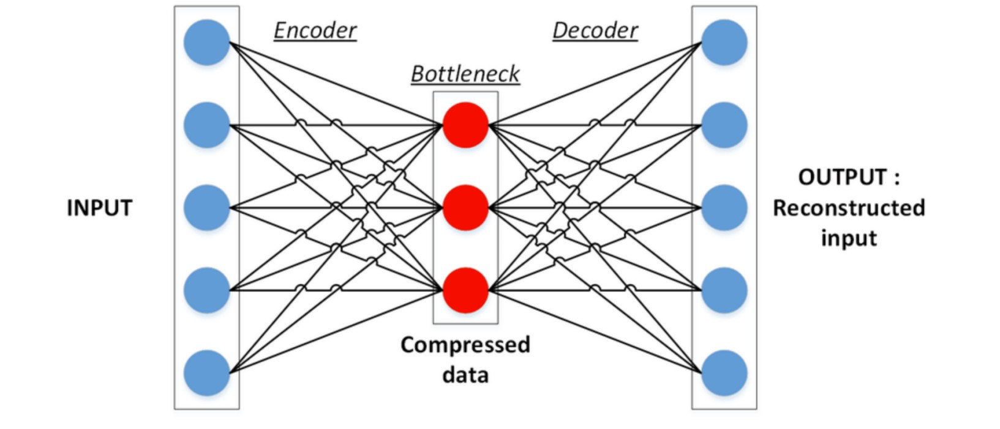
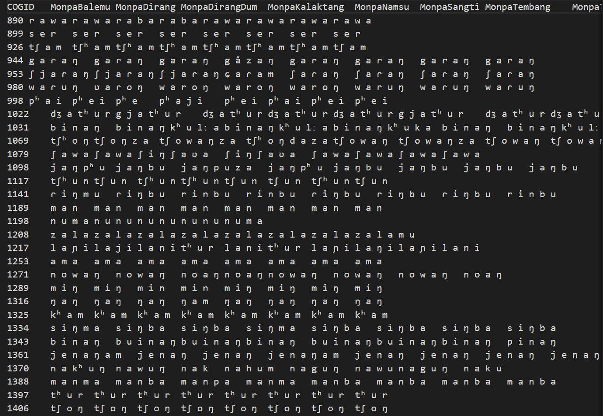
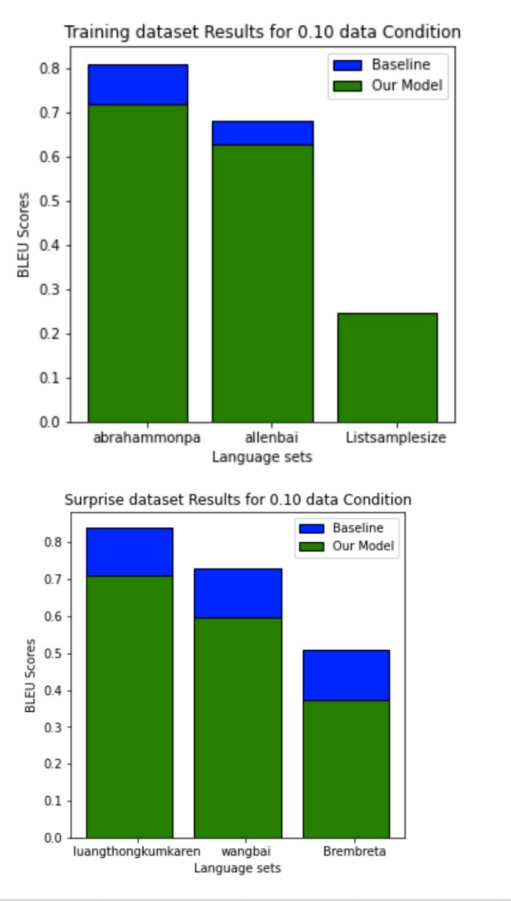

The main task is to predict cognate reflexes from multilingual wordlists. The goal of cognate prediction is to identify in a given language the words that are most likely to be cognates of terms in related languages, where cognates are words that have developed from a common ancestor word. Autoencoders are a unique type of generative network. They consist of an encoder, a latent dimension space, and a decoder. It comprises a neural network architecture that tries to perform the conversion of the higher dimensional data into the lower dimensional vector space. The latent space contains the essential extracted features of the particular image, the data, in a compressed, representative form.

Convolution Auto Encoder
- We constructed a convolutional encoder and decoder model with the premise that the data is in image format.
- The model is first passed through a 2D convolution layer, and after that, we downsample the data by passing it through a MaxPooling layer with a pool size of 2. The convolution layer is then given the pooled data. The encoder network would be made up of this.
- The decoder network takes the input from the encoder layer, pass it through a convolution layer, upsample it to its original shape, and then pass it on to the final convolutional layer, which would return the logits.
- then decode the model to get the cognates back.
Dataset 

Thank You!!